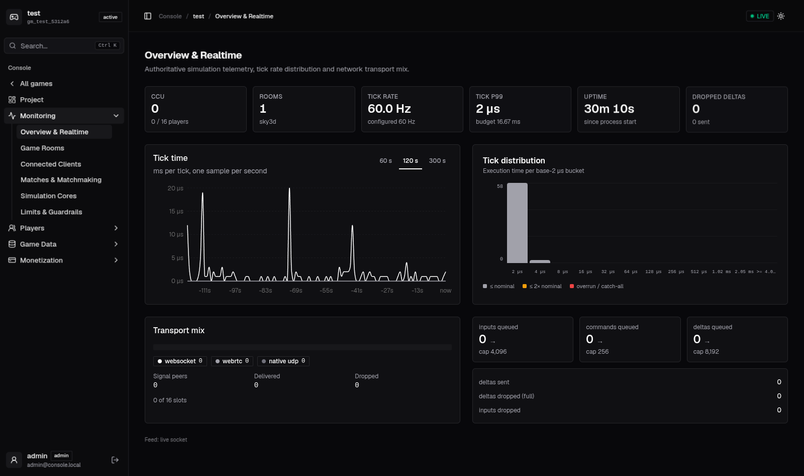
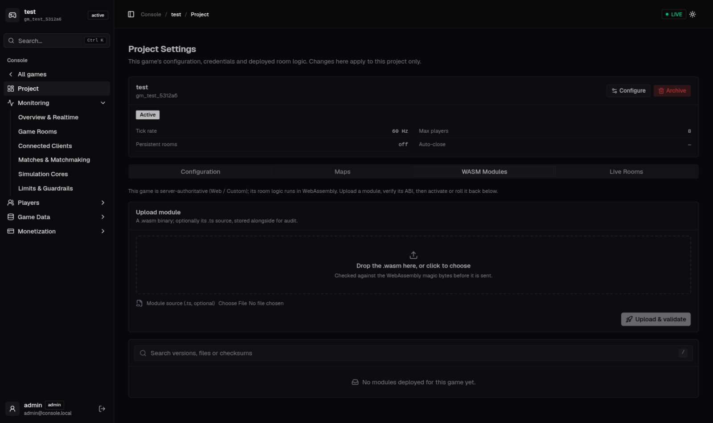

CYG runs your game logic in sandboxed WebAssembly rooms with state sync, physics, an inbuilt ECS backend, accounts & social APIs, and a web console — over WebRTC, raw UDP and QUIC. The whole stack Colyseus + Nakama would give you, collapsed into one artifact you host yourself.
# docker: postgres + redis + the server, live-mounted just up # console → http://localhost:19224/dashboard/ just game coin-rush # or run any example
Nothing here is a plugin you assemble. One process, one config file, one console — and every claim below is backed by code and tests in the repository.
Extend Room, mutate a typed reactive state, commitState(). Zero-GC AssemblyScript, hot-reload on save, per-room sandbox: a trapping room fails alone while the host keeps running.
Rapier2D/3D physics, deterministic RNG + tick timers, navmesh A*, spatial AOI, lag-compensated raycasts — 30+ permission-gated host imports your room calls like functions. Plus a flat ECS backend for template-scale rooms.
WebRTC DataChannels (dual lane) for browsers, raw UDP for native engines, QUIC/WebTransport on its own port. QUIC-tier reliability everywhere: per-frame sequence, reorder-safe delivery, SACK selective resends, sendmmsg + UDP-GSO fan-out.
Descriptor-driven decode at join — no client codegen. onStateChange, field listen, collection onAdd/onRemove, room.request() RPC, client.auth, room.clock. Colyseus-shaped, so nothing reads like alien syntax.
Accounts (device/email/custom, link/unlink, MFA), friends, groups, chat + channels + DMs, parties, presence, storage, leaderboards, tournaments, IAP validation, inventory, notifications, matchmaker.
Live telemetry graphs, live rooms & clients, WASM studio (upload → ABI gate → activate → rollback), map upload (mesh / 2D / navmesh), match terminate, accounts with ban that kicks live sessions in realtime. Every view scoped to the game you opened.
Fixed-tick simulation with deterministic RNG and tick-based timers; rollback and rewind lag-compensation built for competitive play — the foundation Photon-style games need, without the per-CCU bill.
Agones lifecycle hooks built in, one binary per pod, capacity measured (100 rooms × 100 players fits a 2-core / 2 GB pod at 128 Hz). Self-host on a ₹800/mo VPS or scale on Kubernetes.
FlashORM codegen: named SQL in db/queries/*.sql → typed repositories. Adding a domain is write-the-SQL, run-gen, call-the-methods.
Captured from a running deployment. A hosted WASM game's workspace — live telemetry on one WebSocket feed, scoped to this game only.

Overview & Realtime: CCU, rooms, tick rate, tick-p99, live tick-time trace, tick distribution histogram, transport mix, queue depths.

Project tab: configure sync rate and capacity, deploy WASM modules with an ABI gate, upload maps, watch live rooms — activate and rollback without touching the server.
Docker (everything mounted live) or bare metal — both are one command.
git clone https://github.com/your-org/openoxide-gaming && cd openoxide-gaming just up # postgres + redis + server, with examples/sky3d # console → http://localhost:19224/dashboard/ (admin / change-me in dev) just game coin-rush # switch examples · just logs · just down
cargo build --release
OX_ALLOW_DEFAULT_SECRETS=1 ./target/release/cyg-gaming run examples/coin-rush
# console → http://localhost:8124/dashboard/
ox-game init my-game && cd my-game ox-game doctor # config + schema + ABI health check ox-game run # compile room.ts → wasm and serve
/cyg.js and /openoxide-client.js, plus matchmake, signaling and the console.A project is config.toml, your room source and schema, a website you host,
and generated out/. The server reads only what the config names.
name = "coin-rush" runtime = "assemblyscript" source = "src/room.ts" out = "out/room_logic.wasm" port = 7779 # game data (WebRTC over UDP) quic_port = 7780 # QUIC/WebTransport lane (0 = off) tick_rate = 128 max_clients = 16 [control] api_port = 8124 # matchmake, signaling, console [control.session] database_url = "postgresql://…"
const Player = schema({ pid: t.int64(), x: t.number(), y: t.number(), score: t.number() }, "Player");
export const State = schema({
players: t.map(Player),
coinX: t.number(),
coinY: t.number(),
}, "State");
Codegen emits typed server classes and the browser descriptor — the client gets its schema at join, so there is no client-side codegen step.
import { Room, InputReader, Rapier2D, BodyType } from "./openoxide-server";
import { GameState, Player } from "./openoxide.schema";
export class CoinRush extends Room {
private s: GameState = new GameState();
onCreate(max: i32): void {
this.setState(this.s);
Rapier2D.init(0.0, 0.0);
const coin = Rapier2D.createBody(BodyType.Fixed, this.s.coinX, this.s.coinY);
Rapier2D.addCircleCollider(coin, 24.0, true, 0.0, 0.0);
}
onInputPacket(id: i64, input: InputReader): void {
// movement via host physics, mutate state — no byte wrangling
}
onTick(dt: f64): i64 {
return this.commitState(); // dirty-only TLV delta, 128 Hz-ready
}
}
const client = new CYG.Client(SERVER_ORIGIN);
const room = await client.joinOrCreate("game_room");
room.onStateChange((state) => render(state.players.get(room.playerId).x));
callbacks.onAdd("players", (p) => p.listen("score", (v) => hud(v)));
const reply = await room.request("login", { user }); // request/response RPC
room.send("fire", { dir }); // reliable lane
room.sendUnreliable("move", input); // newest-wins lane
ox-game init [dir] # scaffold a project ox-game run [dir] # compile if needed, then serve ox-game aot [dir] # precompile to native .cwasm (<1 ms cold start) ox-game schema [dir] # compile schema.ts → bindings + descriptor ox-game schema-codegen [dir] # typed client bindings (--lang cs|gdscript|cpp|lua|all) ox-game doctor [dir] # config + schema + ABI health check ox-game cook in.glb out.oxcl # cook a 3D collision mesh for instant boot
One process, three doors, one wire contract. Reliability is QUIC-tier on every lane — per-frame sequence, reorder-safe delivery, SACK selective resends — not a TCP fallback.
| Lane | Who | Unreliable | Reliable | Connect path |
|---|---|---|---|---|
| WebRTC DataChannels | browsers (universal) | newest-wins deltas | ordered events + RPC | seat → signaling WS → ICE/DTLS |
| raw UDP | Unity / Unreal / Godot native | same input lane | RUDP: SACK + per-frame RTO | HMAC seat token |
| QUIC / WebTransport | engine + native clients (browsers: in progress) | QUIC datagrams | QUIC streams, framed | direct, self-signed hash pinning |
| Port | Config | What |
|---|---|---|
cfg.port | port | WebRTC data plane (advertised in seats) |
cfg.quic_port | quic_port | QUIC/WebTransport listener (0 = off) |
:7778 | plane config | native engine UDP |
cfg.control.api_port | api_port | matchmake, signaling, /v2 API, console |
Delta broadcast is not a naive loop: sendmmsg batches syscalls (measured ~6–7% send-side saving on loopback, more on real NICs) and UDP GSO collapses same-destination runs — measured at 0.3% of per-message send_to walltime for GSO-eligible bursts. Hot-path buffers are pre-allocated; the 128 Hz tick budget is respected by construction.
Measured on a Ryzen 9 5900XT, release builds, idle machine, single core — reproducible
from the repo (cargo run --release --example bench_ecs_128 and friends). These are the
same numbers in the README; nothing here is extrapolated marketing.
| Inbuilt backend / workload | p99 tick | CCU per core |
|---|---|---|
| WASM room, full combat logic (move + shoot + damage + respawn) @60 Hz | 3.36 ms @500p | ~2.5k |
| WASM room + inbuilt Rapier2D @128 Hz, 100–200p rooms | 0.06 ms @100p | ~9k |
| Inbuilt ECS backend (movement) @128 Hz | 0.07 ms @100p | 14–16k |
| Rapier3D physics step @60 Hz, 500-body rooms | 0.57 ms | ~14.6k |
Room size matters: one 5000-body room is the wrong shape (12.8 ms/tick) while 100–500-player rooms leave 96%+ of the budget free. A 2-core / 2 GB pod serves 100 rooms × 100 players at 128 Hz (0.76× of budget) with peak RAM of 93 MB — 4.6% of the pod. RAM is never the bottleneck; CPU is.
Honest table, not a mud-slinging one. Each of these is good at what it does — CYG's claim is the combination, self-hosted, at commodity-hardware economics.
| CYG | Colyseus | Nakama | SpacetimeDB | Photon Quantum/Fusion | |
|---|---|---|---|---|---|
| Reactive room state-sync DX | ✔ | ✔ | — | subscriptions | ✔ (closed) |
| BaaS (accounts/chat/leaderboards/IAP) | ✔ same process | — | ✔ | — | add-on |
| Authoritative custom logic, sandboxed | ✔ WASM per-room | Node process | Go/Lua/TS module | ✔ WASM module | closed runtime |
| Physics / navmesh / AOI inbuilt | ✔ Rapier + A* + AOI | — | — | — | ✔ |
| Transports | WebRTC + UDP + QUIC | WS/WebRTC | WS | WebSocket/SPDN-b | UDP (their relay) |
| Multi-tenant SaaS hosting | ✔ sandboxed tenants | — | — | — | their cloud only |
| Self-host cost @ ~2k CCU | ~₹800/mo VPS | ~$72+/mo cloud | varies | varies | $240+/mo class |
| Ecosystem maturity | early — read the honest note | 10+ years | 10+ years | growing fast | mature, closed |
One process. One thread for the simulation. A lock-free bus between planes.
┌────────────────────────── one process ──────────────────────────┐ │ Control plane (Tokio/Axum) Game host loop (pinned sim) │ │ ├─ matchmake + seat tokens ├─ WASM room runtime │ │ ├─ /ws/signal (WebRTC signaling) ├─ inbuilt ECS backend │ │ ├─ /v2/* player API (BaaS) ├─ Rapier2D/3D physics │ │ ├─ /v2/console/* + web dashboard ├─ AOI / spatial index │ │ └─ statics (SDK + unity pages) └─ WebRTC · UDP · QUIC lanes │ │ everything talks through one lock-free bus │ └───────────────────────────────────────────────────────────────────┘
| Crate | What it is |
|---|---|
engine-server | host loop: WASM runtime, rooms, inbuilt ECS backend, RUDP, deltas, AOI |
engine-api | /v2 player API + /v2/console + dashboard API |
engine-net | transports: WebRTC (str0m) + raw UDP + QUIC (quinn-proto, sans-IO) |
engine-webrtc-protocol | the shared wire: event/ack frames, SACK, lanes |
engine-wasm / engine-schema | guest ABI + permissions / schema compiler + codegen |
engine-physics / engine-nav / engine-spatial | Rapier worlds + OXCL meshes / navmesh A* / AOI index |
engine-control / engine-bus / engine-agones | plane binding / lock-free channels / K8s GameServer lifecycle |
engine-config / engine-dashboard | config.toml → typed structs / the web console |
The console and database serve many games; each process hosts one. A game workspace
shows only that game's data — telemetry for any other tenant is refused ("This server hosts 'X', not
the requested game") and database views filter by game_id. Bind a process with
game_id/game_key in config.toml.
cargo test --workspace # engine crates + API suite node --test sdk/client/web/test/ # client SDK (schema decode, signaling, RPC) just doctor sky3d # project-level health check